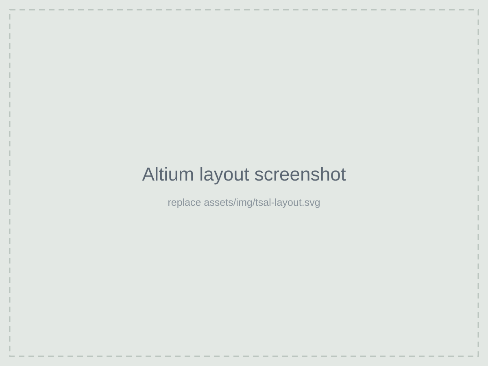
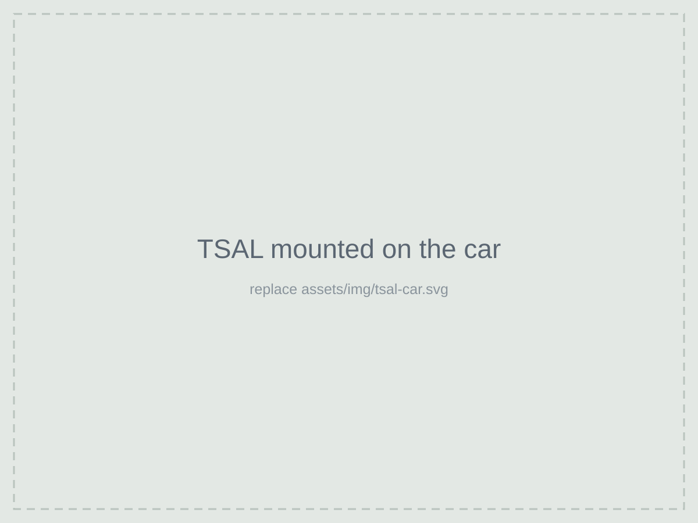

What it does
Formula SAE rules require every electric car to have a Tractive System Active Light: a light mounted high on the car that shows whether the high-voltage system is energized. It has to work independently of the car's main computer, because people need to be able to trust it when deciding whether it's safe to touch the car.
My part
- Designed and laid out portions of the TSAL PCB in Altium.
- Helped fabricate and assemble the board.
- Worked on the car's high-voltage wiring, safety systems and the integration between subsystems.

